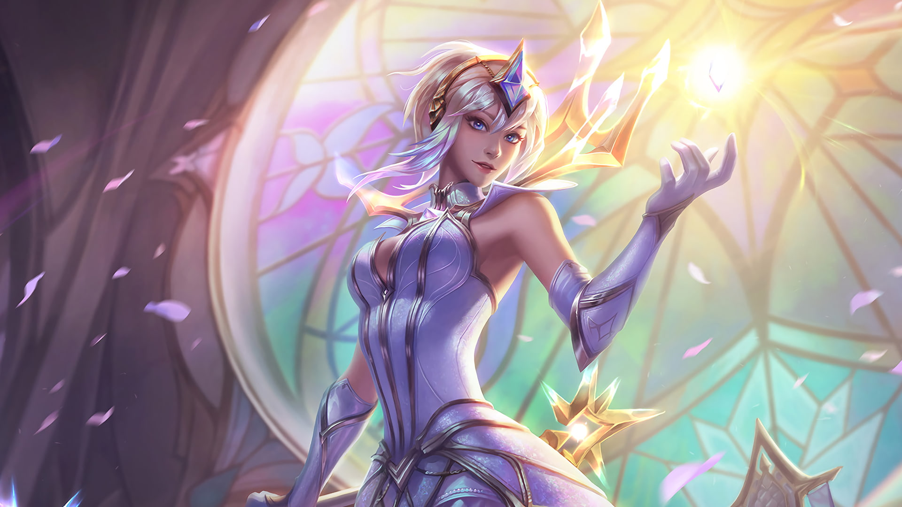

Skins Definitivas
Las skins definitivas en League of Legends son una serie especial de aspectos de alta calidad que presentan a algunos de los campeones más populares del juego con un nuevo conjunto de efectos visuales, animaciones, sonidos y música exclusiva. Cada skin definitiva también viene con una serie de características especiales, como la capacidad de transformar la apariencia del campeón a medida que avanza el juego, o la capacidad de personalizar la experiencia del usuario con elementos interactivos, como emotes, iconos y más.
-

Lux Elementalista
Elementalist Lux es una skin definitiva que presenta al campeón Lux con una nueva serie de efectos visuales, animaciones y música, así como la capacidad de transformarse a medida que avanza el juego, permitiendo a los jugadores elegir entre diez elementos diferentes para personalizar la apariencia y habilidades de Lux.
-
Ezreal Pulso De Fuego
Esta fue la primera skin definitiva en el juego. Con un diseño futurista y tecnológico, Pulsefire Ezreal presenta un conjunto completo de efectos visuales, animaciones y música exclusiva, así como la capacidad de transformarse a medida que avanza el juego.
-
Udyr Guardian De Los Espiritus
Spirit Guard Udyr es otra skin definitiva popular que presenta al campeón Udyr con un nuevo conjunto de efectos visuales, animaciones y música. También cuenta con una serie de características especiales, como la capacidad de personalizar las habilidades del campeón a medida que avanza el juego.
-
Miss Fortune Gatillera Galactica
Gun Goddess Miss Fortune presenta al campeón con un nuevo conjunto completo de efectos visuales, animaciones y música, así como la capacidad de transformarse a medida que avanza el juego. Esta skin también presenta cuatro formas diferentes para Miss Fortune, cada una con un estilo único y habilidades especiales.
Skins Prestigiosas
Los skins de prestigio son skins que ya existen pero recreados con una paleta dorada y detalles. Están hechos para que se vean prestigiosos (de ahí el nombre), y los jugadores suelen buscar los de sus campeones favoritos.
-
K/DA Ahri Prestigiosa
Skin de la campeona Ahri con una temática musical y de K-pop. Esta skin es exclusiva de los eventos anuales y solo se puede obtener mediante el uso de tokens de evento.
-
Yasuo True Damage Prestigiosa
La skin presenta un modelo completamente nuevo para Yasuo, que lo transforma en un miembro del grupo de música True Damage. Su atuendo es negro y dorado, con detalles en rojo y azul, y tiene una guitarra eléctrica como arma en lugar de su espada.
-

Lux Academia De Combate Prestigiosa
La skin Lux Academia de Combate Prestigiosa es una versión de prestigio de la skin base Academia de Combate de Lux en League of Legends.
-
Garen Reinos Mecha Prestigiosa
La skin Garen Reinos Mecha Prestigiosa es una versión prestigiosa de la skin base Reinos Mecha de Garen en League of Legends. Esta skin fue lanzada en el evento "Reinos Mecha" en 2019 y presenta un diseño completamente nuevo para Garen, que lo transforma en un guerrero futurista. Su atuendo es una armadura mecha en tonos rojo y negro, con detalles dorados y plateados.
Skins Legendarias
Las skins legendarias en League of Legends son una serie de aspectos de alta calidad que presentan a algunos de los campeones más populares del juego con un nuevo conjunto de efectos visuales, animaciones, sonidos y a veces incluso cambios en las habilidades del campeón. A diferencia de las skins definitivas, las skins legendarias no tienen características especiales de transformación o personalización, pero aún así son muy valoradas por los jugadores debido a su calidad y atención al detalle.
-
Yasuo Dragon De Los Sueños
Yasuo Dragonmancer presenta al campeón con un nuevo diseño temático de dragón, con un conjunto completo de efectos visuales, animaciones y sonidos temáticos de fuego y dragones. Además, la skin cambia la forma de su espada, convirtiéndola en una espada temática de dragón que brilla con energía mágica. La skin también incluye una nueva animación de la habilidad definitiva de Yasuo, que muestra a Yasuo transformándose en un dragón dorado mientras realiza su ataque. Esta animación es impresionante y agrega un nivel adicional de autenticidad a la skin.
-
Tristana Entrenadora De Dragones
La skin Dragon Trainer Tristana es una skin legendaria en League of Legends, lo que significa que ofrece un conjunto completo de cambios en el diseño, efectos visuales y animaciones, así como una historia temática única. Fue lanzada por primera vez en 2016 y ha sido muy apreciada por los jugadores desde entonces. La skin presenta a Tristana con un nuevo diseño de entrenadora de dragones, con una nueva apariencia de dragón para su mascota de compañía Riggle. La skin también cambia la apariencia de las habilidades de Tristana para que parezcan temáticas de dragones, como su cohete que se convierte en un aliento de dragón en llamas.
-
Proyecto: Mordekaiser
Mordekaiser Proyecto presenta al campeón con un diseño temático de cyborg futurista, con un conjunto completo de efectos visuales, animaciones y sonidos temáticos de alta tecnología. La skin cambia la apariencia de la maza de Mordekaiser para que parezca una hoja energética, y cambia la apariencia de sus habilidades para que parezcan de alta tecnología y futuristas. La skin también incluye una nueva animación para su habilidad definitiva, que muestra a Mordekaiser teleportando a su enemigo a un mundo virtual futurista donde se enfrentan en un combate virtual. Esta animación es impresionante y agrega un nivel adicional de autenticidad a la temática de la skin.
-
Ekko True Damage
La skin presenta a Ekko con un diseño inspirado en la moda urbana, con un conjunto completo de efectos visuales, animaciones y sonidos temáticos de música rap. La skin cambia la apariencia de su dispositivo de manipulación temporal para que parezca un micrófono, y cambia la apariencia de sus habilidades para que parezcan efectos de luz y sonido de alta energía. La skin también incluye una nueva animación para su habilidad definitiva, que muestra a Ekko saltando hacia un gran círculo de luz y sonido mientras realiza un rap. Esta animación es impresionante y agrega un nivel adicional de autenticidad a la temática de la skin.
Skins Epicas
Las skins épicas en League of Legends son una de las categorías de skins más populares en el juego. Estas skins ofrecen un nuevo conjunto de cambios en el diseño, efectos visuales y animaciones de los campeones, así como una historia temática única.
-
Tristana Flor Espiritual
En la skin "Spirit Blossom" de Tristana, su diseño presenta una apariencia temática de una guerrera flor, con un vestido de flores y una flor en su cabello. También tiene un nuevo diseño para su arma, que parece un báculo con un cristal en la parte superior. Las habilidades de Tristana en esta skin tienen efectos visuales temáticos de flores, hojas y pétalos que salen volando alrededor de sus enemigos cuando usa sus habilidades. Además, la skin también tiene nuevas animaciones, incluyendo una animación única para su habilidad de "Salto con Cohete", en la que ella se eleva en el aire y deja una estela de pétalos mientras vuela.
-
Viego Disonancia De Pentakill
En la skin "Pentakill" de Viego, su diseño presenta una apariencia temática de rockero, con una armadura metálica y un peinado largo y desordenado. También tiene un nuevo diseño para su espada, que parece una guitarra eléctrica. Las habilidades de Viego en esta skin tienen efectos visuales temáticos de rock, como la animación de su habilidad "Espada de la Oscuridad", en la que se forma una nube de humo y luces detrás de él mientras la utiliza. Además, la skin también tiene nuevas animaciones, como la animación de regeneración de vida, en la que Viego toca una guitarra eléctrica y crea una explosión de efectos visuales mientras se cura.
-
Sett Dragon De Obsidiana
En la skin "Dragon de Obsidiana" de Sett, su diseño presenta una apariencia temática de dragón, con una armadura negra y detalles de piedra de obsidiana. También tiene nuevos diseños para sus habilidades y su arma, que parecen estar hechas de lava y rocas fundidas. Las habilidades de Sett en esta skin tienen efectos visuales temáticos de lava y fuego, como la animación de su habilidad "Puñetazo de Haymaker", en la que Sett golpea el suelo y crea una explosión de lava y roca. Además, la skin también tiene nuevas animaciones, como la animación de su habilidad "Golpe del Vacío", en la que Sett se eleva en el aire y deja una estela de fuego mientras carga su ataque.
-
Yasuo Subjefe
En la skin "Battle Boss" de Yasuo, Yasuo tiene un diseño temático de jefe de videojuegos, con un traje de alta tecnología y una espada láser futurista. Además, sus habilidades tienen efectos visuales de videojuegos, como sonidos y animaciones de píxeles. La skin también tiene nuevas animaciones y efectos visuales para sus habilidades, como su habilidad "Espada del Viento", que tiene un efecto de onda de choque similar al de un videojuego y su habilidad "Corte por el Viento", que tiene un efecto de rayo láser.